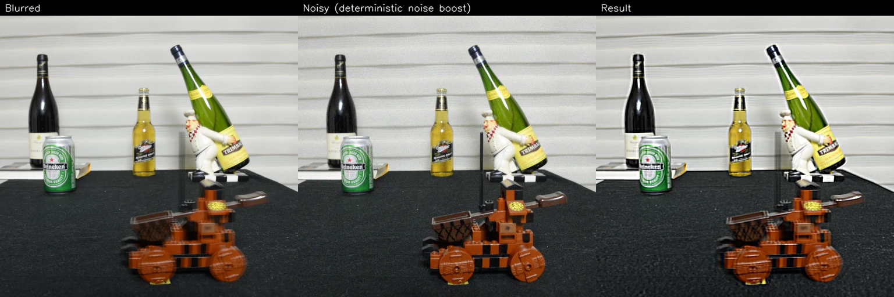
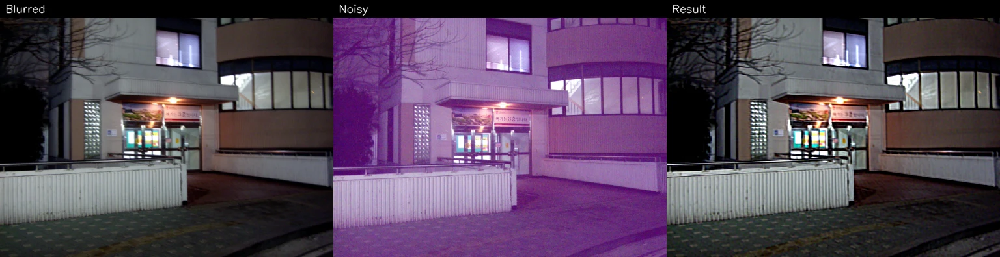
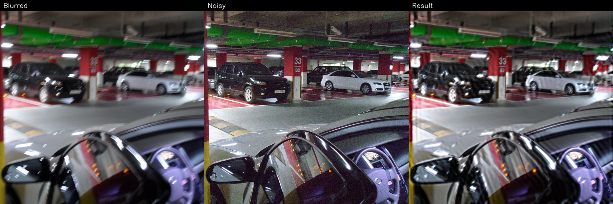
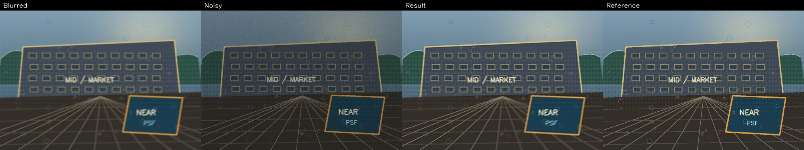
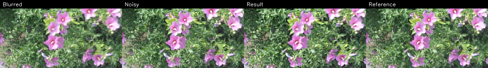

Historical photograph: object motion
- Metric
- No-reference proxy
- Objective (full-resolution)
- 0.632094
2013 paper record · 2026 reference reconstruction
A framework-free gallery for the preserved paper archive and a disparity-guided regional restoration reference implementation. Each comparison is ordered blurred, noisy auxiliary, restored, then optional reference.
The preserved 2013 paper and historical 2009–2011 README figures are research records. The 2026 Python package is a reproducible modern reference reconstruction, not the exact deleted original implementation and not bit-identical to historical outputs.





Metrics and selected HPO configurations are from the committed public benchmark manifest output. The historical-photograph values are conservative no-reference proxy objectives, not PSNR or SSIM. The synthetic card reports input → restored reference metrics.
uv sync
uv run disparity-deblur-benchmark \
--manifest benchmarks/manifests/public.json \
--dataset-root benchmarks/public-assets \
--output-dir output/showcaseCode is MIT licensed. Historical photographs and project-created synthetic images are © Hyeon Sang Jeon, all rights reserved. The external GoPro-derived benchmark is CC BY 4.0; detailed attribution is in THIRD_PARTY_LICENSES.md and ATTRIBUTION.json. Cite the reconstruction via CITATION.cff and the historical work via the preserved paper PDF.